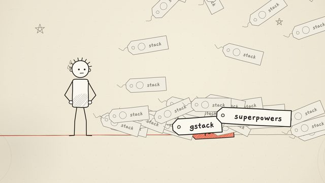
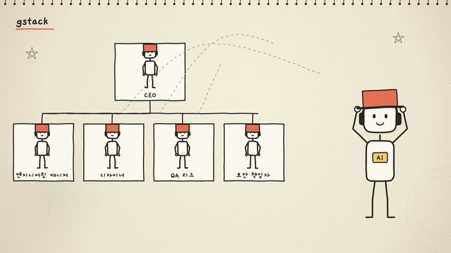
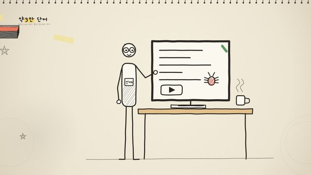
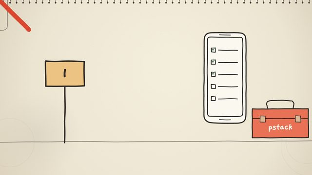
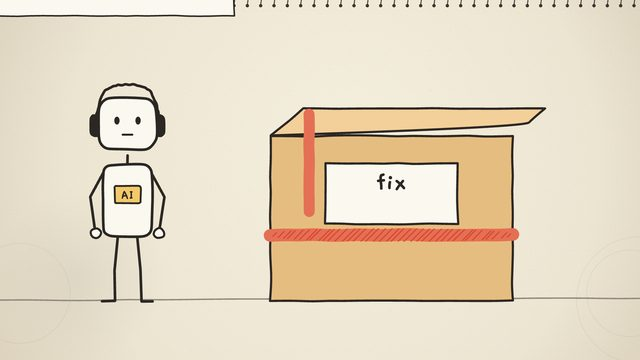

A red "pstack" tag is pulled in on a string, a stick figure walks up to it, then look-alike grey "stack" tags rain down and bury it while the camera pulls back to show the notebook binding.

A driver sits in a cart behind a horse.

A hierarchy is drawn as five cards, then AI takes on the roles represented by their hats.

Loose pages gather into a stack under the handwritten word count, the stack gets a red cover, then the headline and book shrink into a small tag at the top left and a desk scene takes the frame: a large monitor with code lines, a play button and a bug, and a bespectacled senior colleague with a name badge standing beside it.

Signposts mark zero and one while the pstack toolbox moves toward a phone checklist, turning one working thing into many.

A taped bug-fix note distinguishes a hypothesis from a fix, and the robot inspects a labeled package.

A robot with a clipboard stands by a box of coins while two alarm clocks compare "without pstack" and "pstack" under a quoted note (30 minutes vs one hour).